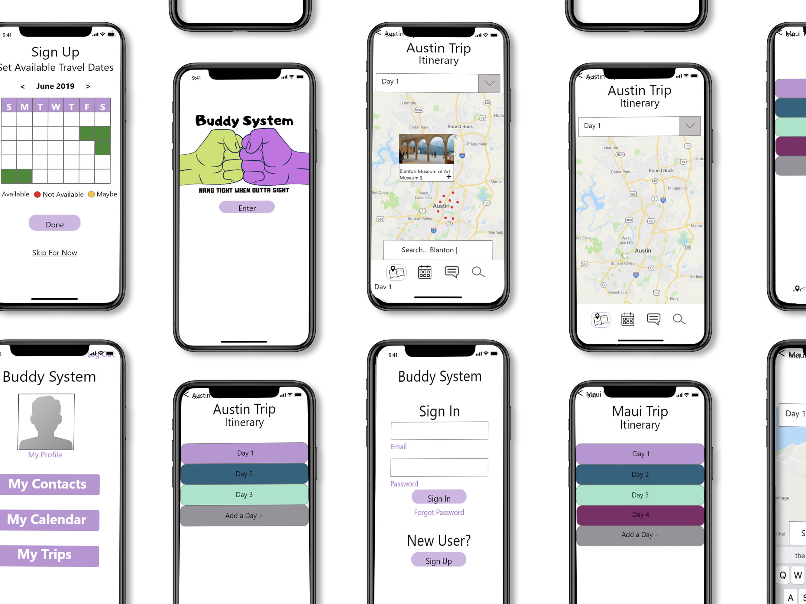
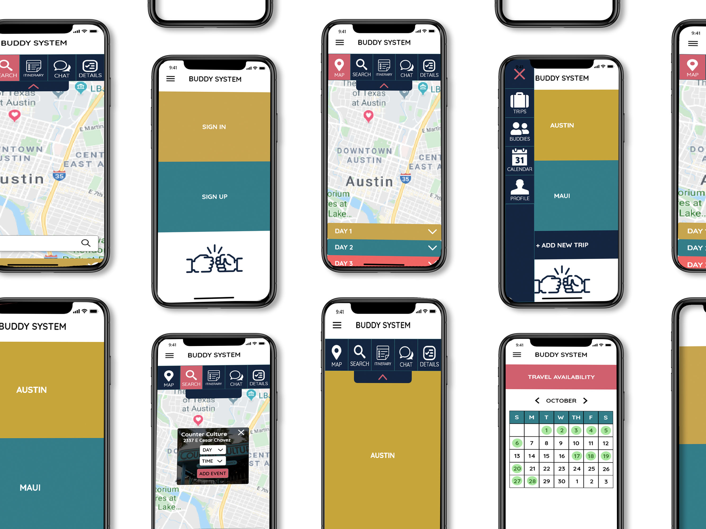

Buddy System
Individual Project
Travel Planning App
Role: UX | UI Designer
THE PROBLEM
When planning a trip with a group it is difficult to take everyone’s schedules into account. Not only is planning travel dates around schedules tough, but it is also hard to plan the trip itinerary to please everyone’s wants and goals.
THE SOLUTION
The Buddy System app will create a platform for Travel Buddies to easily plan a trip together that works for everyone’s schedule and trip goals.


Once apon a time...
I worked in an office where I serviced about 50 client's tech needs.
These clients were traveling about 70% of the year and constantly asking me to set up some sort of shared calendar that their travel buddies could communicate through.
After playing around with, and setting up, all kinds of shared calendar apps and websites I realized that I was actually doing research. I then set out to create Buddy System.
A shared calendar/travel planning app that meets the needs of travelers everywhere!
I began by compiling all research and additional user interviews to better understand users wants, needs, and behaviors while traveling

I analyzed these finding using an Affinity Diagram

Then used that information to really understand the user's feelings


This data helped me develop Buddy System's target user, Noah Ferdinand

User Insights:
Noah needs a simple way to compare his friends’ schedules and wants for their upcoming trip so he can plan a stress free vacation that caters to everyone.
During my research I discovered that all subjects find planning trips around all parties’ schedules, wants, and goals one of the most difficult aspects of organizing a trip.
How might we easily gather all travel buddies’ schedules and wishlist for our trip so that Noah can plan a vacay that pleases everyone.
Problem Statement:
When planning a trip with a group it is difficult to take everyone’s schedules into account. Not only is planning travel dates around schedules tough, but it is also hard to plan the trip itinerary to please everyone’s wants and goals.
br>

User Scenarios and Storyboards helped guide me in the design process while keeping the user in mind.


I then conducted research on what features were most important in achieving Buddy System's goals.


With a clear idea of what feautures are neccessary I created a user flow. This tells me how the user will move throughout the site.

The UI Design process began with sketches. This makes an easy edit process but allows me to quickly test our features impact on the user.


I then produced low and mid fidelity mockups for user testing.


My testing plan included three scenarios

Three iterations were formed after sessions of user testing.
One major issue with the design was figuring out how to properly present the multiple features while still having a clear, user friendly design.
Testing and iteration led me to develop a double nav within the app.
The main nav drops down from a hamburger menu and allows the user to navigate the app: Trips, Profile, Travel Buddies, and Travel Dates.
The second nav is found within the Trips feature. This allows the user to navigate within each individual trip: Map, Search, Itinerary, Chat, and Trip Details.
Once the overall layout and concept was decided on I began accessability and color testing. I then created a styleguide and UI design



Buddy System is a shared travel app where you and your Travel Buddies can compare travel dates, plan a trip and itinerary, then track each other's location while traveling. This intuitive app allows Travel Buddies to enjoy their trip and freedom without keeping up with their Buddies' where abouts.
Get lost on an adventure while staying completely on schedule. Opt in or Out of group activites and enojoy the easy chat feature that keeps all buddies in touch at all times.
:)